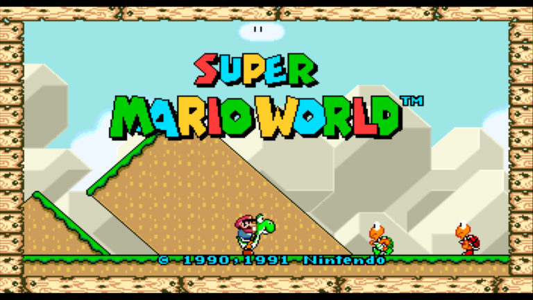
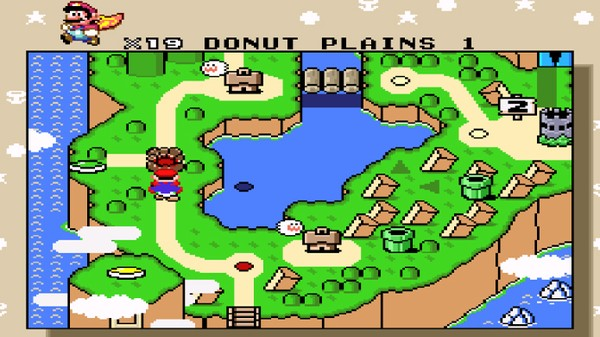
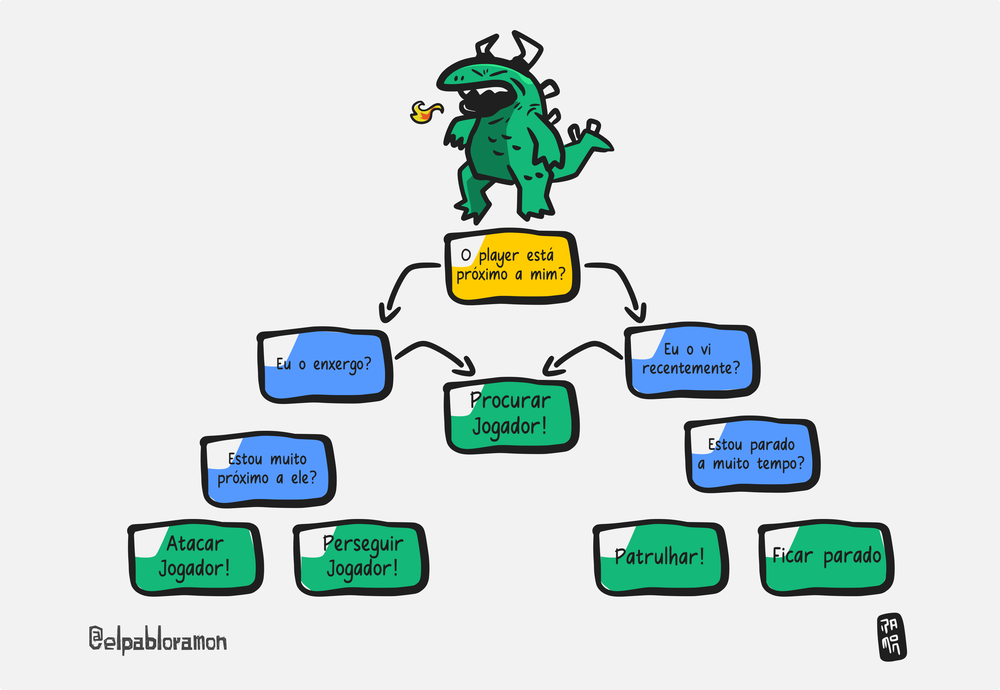
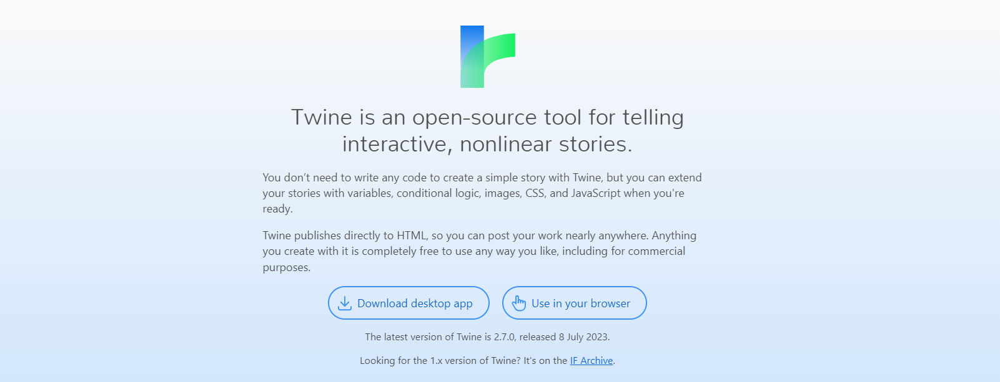
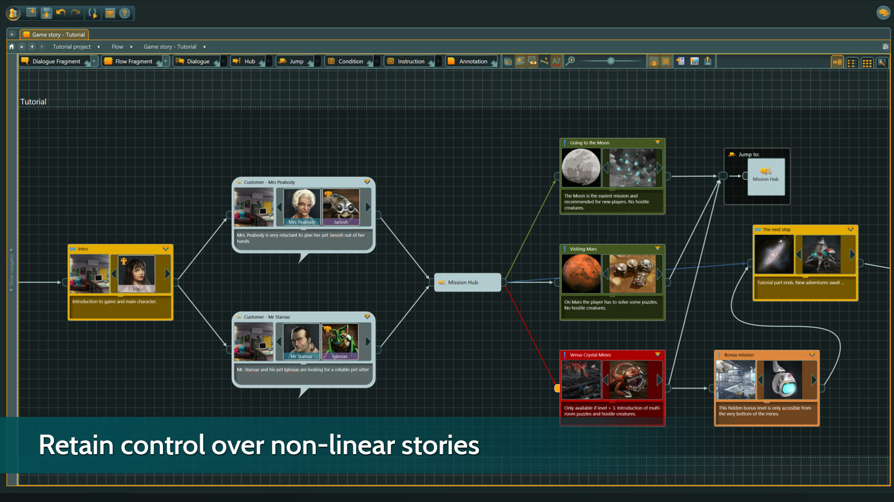
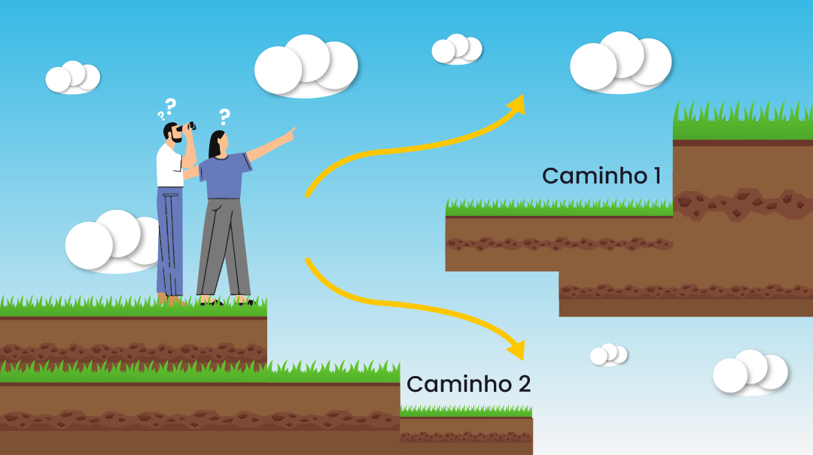
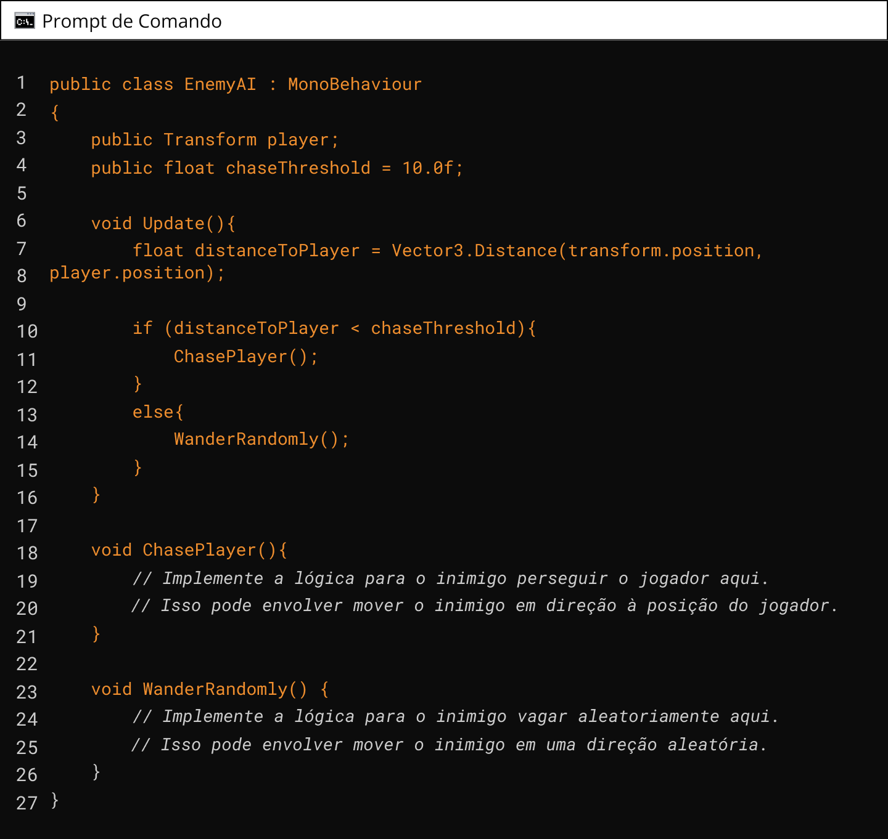

Aplicar árvores de decisão conforme especificações técnicas do projeto.
Vamos iniciar os estudos?
PlayAssista ao vídeo abaixo para uma introdução aos seus estudos
Como as árvores de decisão são usadas em jogos digitais?
Árvores de decisão são ferramentas poderosas usadas em muitos campos, incluindo jogos digitais. Elas são essencialmente diagramas que ajudam a visualizar e mapear possíveis resultados de uma série de escolhas relacionadas. Imagine que você está jogando um jogo de aventura e chega a um ponto onde tem que escolher entre explorar uma caverna ou subir uma montanha.
Essa é uma decisão simples que pode ser representada por uma árvore de decisão. Assista ao vídeo abaixo para uma introdução ao assunto de árvores de decisão e grafos aplicadas a jogos.
Um exemplo clássico de árvore de decisão em jogos é a série "The Witcher". Em muitos pontos do jogo, o jogador deve tomar decisões que afetam o enredo e o mundo ao seu redor.
As árvores de decisão são uma estrutura de dados hierárquica usada em jogos digitais, inteligência artificial, aprendizado de máquina e muitas outras áreas. Elas são chamadas de "árvores" de decisão porque a estrutura da árvore é usada para representar um conjunto de decisões e seus possíveis resultados, de forma semelhante a um fluxograma.
As árvores de decisão são comumente usadas para tomar decisões complexas, dividindo-as em várias decisões mais simples. Para ampliar os seus conhecimentos, clique e assista o vídeo a seguir.
Apesar de não termos informação se árvores de decisão foram implementadas no jogo Super Mario World, nós podemos inferir algumas possibilidades:
Por exemplo, as árvores de decisão podem ter sido usadas na programação de Inteligência Artificial (IA) dos inimigos no jogo. Cada inimigo no Super Mario World tem um conjunto específico de comportamentos que podem ser representados como uma árvore de decisão. Por exemplo, um Koopa Troopa (a tartaruga verde) no jogo pode ter uma árvore de decisão simples que determina se ele deve andar para a esquerda ou para a direita, dependendo da posição de Mario.
Além disso, as árvores de decisão podem ter sido usadas no design de níveis do jogo. Super Mario World é conhecido por seus níveis complexos e ramificados, com muitos caminhos diferentes que os jogadores podem seguir. Esses caminhos podem ser representados como uma árvore de decisão, com cada ramificação representando um caminho diferente que o jogador pode tomar.
As árvores de decisões podem ser muito mais complexas, com múltiplos nós e ramos, levando a diversas possibilidades e finais diferentes. Os desenvolvedores podem usar essa estrutura para criar histórias ramificadas, oferecendo aos jogadores a sensação de que suas escolhas têm impacto no desenrolar do jogo.
QUESTÃO 1
Avalie se a afirmação a seguir é verdadeira ou falsa.
Uma árvore de decisão é um diagrama que ajuda a visualizar e mapear possíveis resultados de uma série de escolhas relacionadas.
Uma árvore de decisão é uma ferramenta visual e analítica que ajuda na tomada de decisões. Imagine-a como uma árvore real, onde cada galho representa uma escolha diferente.
Ao usar árvores de decisão em jogos, os alunos aprendem sobre lógica de decisão, análise de consequências, e estratégia. É uma forma interativa e envolvente de explorar o processo de tomada de decisões.
Aqui está um exemplo simplificado de uma árvore de decisões que mostra as possíveis ações de um não-personagem (NPC) em um jogo de aventura.
QUESTÃO 2
Avalie se a afirmação a seguir é verdadeira ou falsa.
Todas as decisões em uma árvore de decisão devem ter apenas um resultado possível.
"Life is Strange" é um bom exemplo da aplicação de árvores de decisões em jogos, pois é um jogo episódico de aventura gráfica desenvolvido pela Dontnod Entertainment e publicado pela Square Enix. A história segue Max Caulfield, uma estudante de fotografia que descobre ter o poder de rebobinar o tempo, permitindo-lhe alterar o curso dos eventos.

Ao retornar à sua cidade natal, Arcadia Bay, Max se reúne com sua antiga amiga, Chloe Price, e juntas elas começam a investigar o misterioso desaparecimento de Rachel Amber, uma estudante popular. À medida que mergulham mais fundo no mistério, Max começa a ter visões de um tornado devastador que ameaça destruir Arcadia Bay.
Ao longo do jogo, os jogadores são confrontados com uma série de decisões morais e éticas que influenciam o desenrolar da história e seus múltiplos finais. O jogo explora temas como amizade, identidade, aceitação e os efeitos borboleta das escolhas que fazemos.
A narrativa de "Life is Strange" é profundamente emocional e aborda questões relevantes da vida real, tornando-se um marco no gênero de aventura narrativa.
"Life is Strange" é um excelente exemplo de como as árvores de decisão são utilizadas em jogos narrativos para criar histórias ramificadas e experiências personalizadas para os jogadores. Embora o jogo não exponha explicitamente uma "árvore de decisão" para os jogadores, o conceito está profundamente enraizado em sua mecânica e narrativa. Aqui está como:
Em resumo, "Life is Strange" utiliza árvores de decisão de forma intrínseca para criar uma narrativa rica e ramificada, onde as escolhas dos jogadores têm um impacto significativo no desenrolar da história. A habilidade de retroceder o tempo não só aprofunda a experiência do jogador, mas também amplia as possibilidades narrativas, tornando cada escolha uma peça fundamental no intrincado quebra-cabeça da trama.
Existem várias ferramentas disponíveis para ajudar a criar e visualizar árvores de decisão, como o Twine e o Articy:draft. O Twine, é um software free que pode ser usado tanto no navegador, quanto baixado para seu computador. Ele é uma ferramenta que usa o poder do HTML5 para prover uma forma de criação de histórias não lineares. Perfeito para quem quer criar mundos com diversas possibilidades.
No site do Twine (http://twinery.org/) tem bastantes exemplos feitos por outras pessoas. Lá você pode se inspirar e começar a sua narrativa baseada em uma árvore de decisões.
Articy:draft 3 é uma ferramenta visual para criar histórias interativas e organizar conteúdo narrativo, como diálogos ramificados, bancos de dados de objetos e muito mais.
No vídeo a seguir é demonstrado como criar a estrutura para as árvores de decisões em jogos. Nele, você entenderá como construir múltiplas possibilidades de ação usando o software Twine.
Estruturar um level design usando árvores de decisão envolve mapear todas as possíveis ações e resultados em um nível. Cada nó na árvore representa uma decisão que o jogador pode tomar, e cada ramificação representa o resultado dessa decisão. Aqui está um exemplo de como isso pode ser feito:
Vamos considerar um jogo de plataforma simples. No início do nível, o jogador pode escolher entre dois caminhos: um caminho superior e um caminho inferior. Isso seria representado como o primeiro nó de decisão na árvore.
Se o jogador escolher o caminho superior, ele pode encontrar um inimigo que precisa ser derrotado para prosseguir. Se o jogador escolher o caminho inferior, ele pode encontrar um item útil, mas também um obstáculo que requer uma habilidade específica para superar. Cada um desses resultados seria uma ramificação adicional na árvore de decisão.
Este processo continua até que todas as possíveis ações e resultados no nível sejam mapeados na árvore de decisão.
Lembre-se, a árvore de decisão é uma ferramenta para ajudar a planejar e visualizar o design do seu nível. A implementação real dessas decisões e resultados no jogo dependerá dos sistemas e mecânicas específicas do seu jogo.
QUESTÃO 3
Qual das seguintes afirmações descreve melhor a principal característica das árvores de decisão utilizadas em jogos?
Aqui está um exemplo de como você pode implementar uma árvore de decisão simples para a movimentação de um inimigo em relação a um personagem na Unity. Este exemplo supõe que você tem um inimigo que pode perseguir o jogador se estiver perto o suficiente, ou vagar aleatoriamente se o jogador estiver muito longe.
Neste exemplo, a árvore de decisão é implementada no método Update(). A cada quadro, o script calcula a distância entre o inimigo e o jogador. Se a distância for menor que um certo limiar (chaseThreshold), o inimigo persegue o jogador chamando o método ChasePlayer(). Se a distância for maior que o limiar, o inimigo vaga aleatoriamente chamando o método WanderRandomly().
Os métodos ChasePlayer() e WanderRandomly() são deixados vazios neste exemplo, mas você os preencheria com a lógica apropriada para mover o inimigo. Por exemplo, ChasePlayer() pode mover o inimigo em direção à posição do jogador, enquanto WanderRandomly() pode mover o inimigo em uma direção aleatória.
Lembre-se de que este é um exemplo muito simples e que árvores de decisão reais usadas em jogos podem ser muito mais complexas, com muitos nós e ramificações diferentes.
Árvores de decisão são uma ferramenta poderosa usada em muitos campos, incluindo jogos digitais. Elas são diagramas que ajudam a visualizar e mapear possíveis resultados de uma série de escolhas relacionadas. Em jogos, elas são usadas para criar narrativas ramificadas, sistemas de IA e até mesmo para estruturar o design de níveis. Elas permitem que os desenvolvedores criem experiências de jogo dinâmicas e reativas que se adaptam às escolhas do jogador. Um exemplo clássico de árvore de decisão em jogos é a série "The Witcher", onde as decisões do jogador afetam o enredo e o mundo ao redor.
O jogo "Life is Strange" da Square Enix é um exemplo perfeito de uma árvore de decisão em ação. É um jogo interativo onde os espectadores podem fazer escolhas em pontos-chave da história, afetando o desenrolar e o final da trama. Cada decisão que o espectador toma em "Life is Strange" leva a diferentes ramificações na história, criando uma árvore de decisão complexa. No design de níveis de jogos, as árvores de decisão podem ser usadas para mapear todas as possíveis ações e resultados em um nível. Cada nó na árvore representa uma decisão que o jogador pode tomar, e cada ramificação representa o resultado dessa decisão.